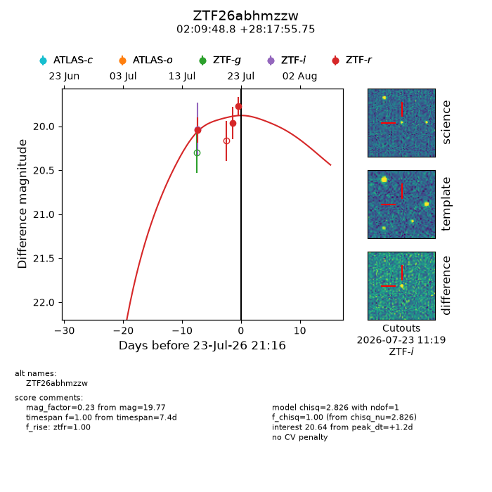
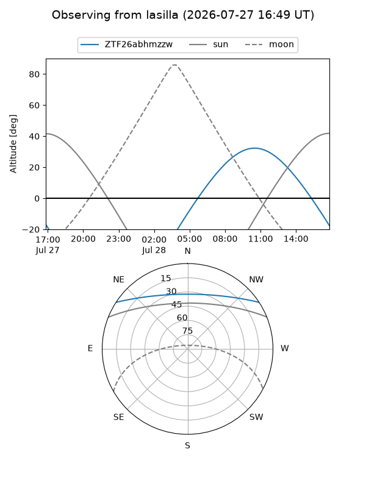
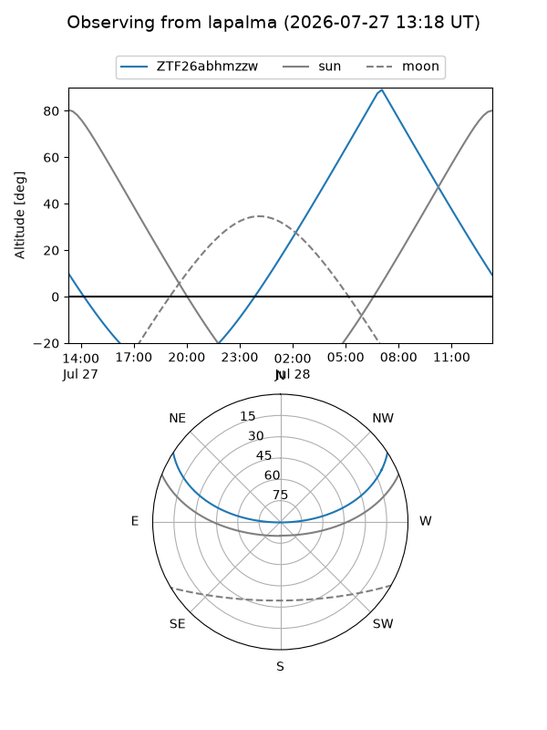
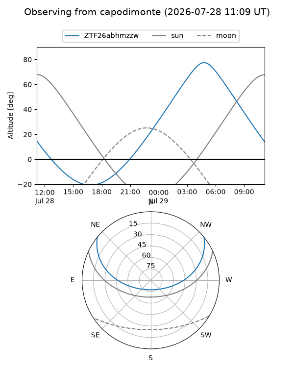
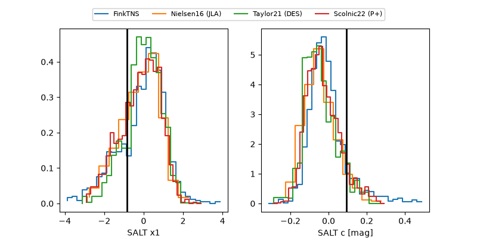

ZTF26abhmzzw
Target ZTF26abhmzzw at 2026-07-23 21:19
Aliases and brokers:
FINK-ZTF: ztf.fink-portal.org/ZTF26abhmzzw
Lasair-ZTF: lasair-ztf.lsst.ac.uk/objects/ZTF26abhmzzw
ALeRCE-ZTF: alerce.online/object/ZTF26abhmzzw
Direct TNS query: direct search
alt names
ZTF26abhmzzw (ztf,fink_ztf)
Coordinates:
equatorial (ra, dec) = 32.4532,+28.29882
equatorial (HMS+DMS) = 02:09:48.76,+28:17:55.75
galactic (l, b) = (143.1867,-31.47178)
Flags:
peak dt: +1.2
Photometry:
last ztfr=19.77
3 ztfr detections
Lightcurve

Visibility



Additional plots
